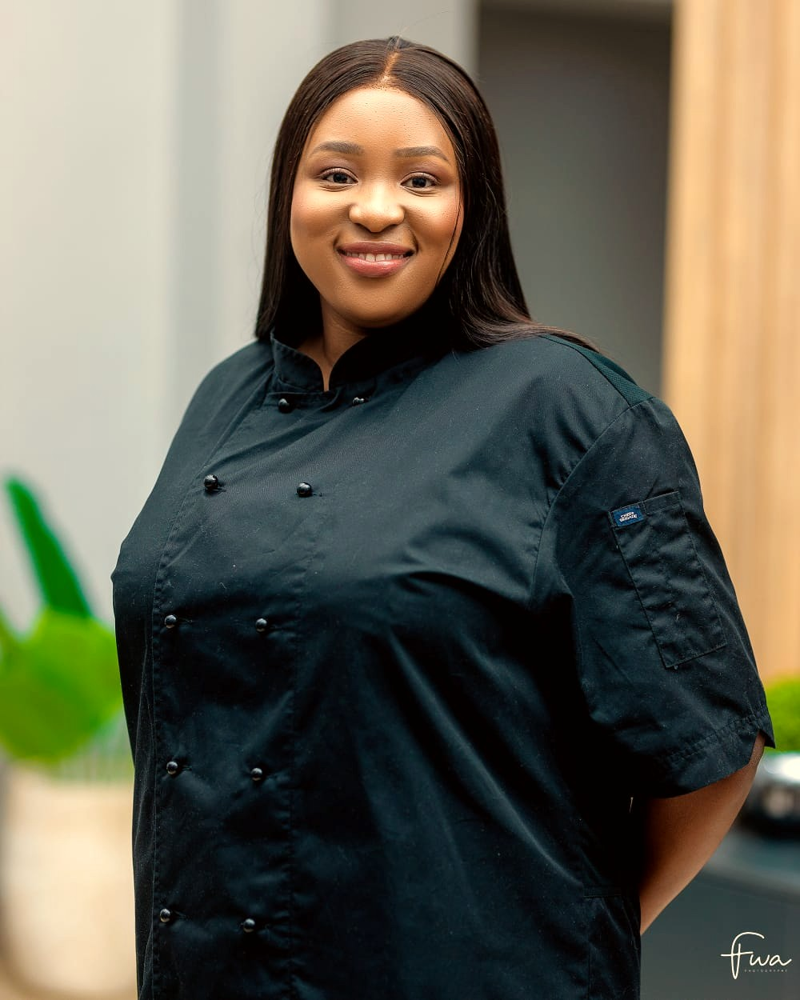
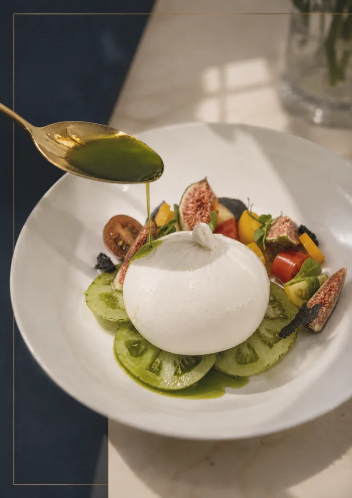

I am a private chef. Coastal Mediterranean food, cooked in your home in Abu Dhabi and Dubai, honestly and without shortcuts.
I have always believed that the finest thing you can offer someone is an honest meal, made with care, in their own home. Not theatre. Not excess. Just real food, cooked properly, and set down with love. This is a little about how I came to cook that way, and what I refuse to compromise on.
I grew up in Harare, between my mother's kitchen and my grandparents' farm. Nothing we ate came from a packet, and a meal was something you gave to people, never something you hurried. That is still how I cook.
The vegetables were pulled from the ground that morning and the eggs were still warm. My mother cooked for whoever came through the door, and my grandparents grew most of what we ate. I did not know it then, but that was my whole training.
Later I trained in Greek fine dining, learned the discipline of a serious kitchen, and represented Zimbabwe at the first International Young Chef Olympiad. None of it replaced the farm. It only proved the farm right.
Today I cook as a private chef in the homes of Abu Dhabi and Dubai, and everything I put on a table is held under my own brand, Satiate Luxe. The food has changed shape over the years. The way I care for it has not.
Good food begins long before the stove.
People ask what makes my food taste the way it does. Honestly, it is as much what I leave out as what I put in. This is the code I hold myself to, every service, every time.

My cooking follows the coast of the Mediterranean, from the south of France to the Greek islands and the shores of Spain. It is bright, generous and unfussy. Sunlight on a plate. I build a plate around the best of one ingredient rather than the most of many, and I let the season decide. It is the food I love most, and the food I think a table is happiest eating.
I wrote a short guide to how I cook and what I refuse, with one of my favourite recipes. It is yours, with my compliments.
Thank you. Here is your copy of The Honest Kitchen.
Download the guideBeyond private tables, I advise on the kitchens behind the food. I trained in fine dining, I have built and run professional kitchens, and I bring that same honest standard wherever good food is taken seriously, a restaurant, a private household, or a kitchen being built from scratch.
Menu development, refining the kitchen, shaping a concept, and training a team to cook more honestly.
Setting up how a home kitchen runs, guiding and training household cooks, and bringing order and standard to the everyday table.
Advising on the design, equipment and flow of a kitchen, so it is built to cook well from the first day.
Whatever the setting, the standard is the same, real food, done properly, with nothing hidden.
Enquire about consultingIf you would like me to cook for you, a private dinner or something regular, that lives with my brand, Satiate Luxe.
Visit Satiate LuxeIf you would like to work with me on a kitchen, a restaurant, a household, or a concept, write to me directly. I would love to hear what you are building.
For press, you can write to me at hello@tadiwatendayi.com.